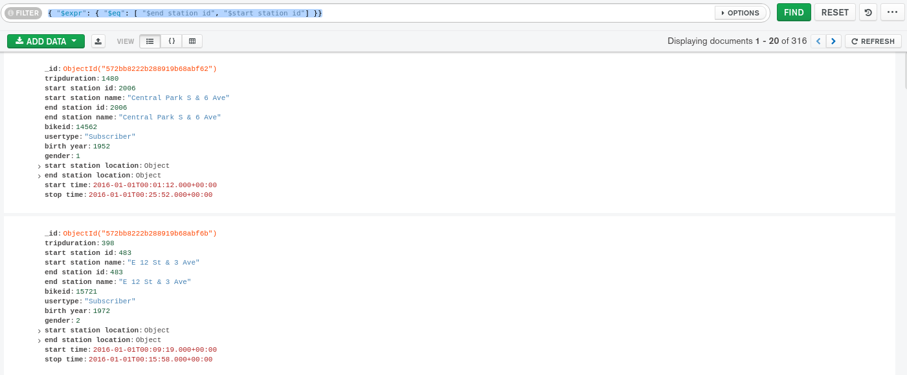

Expressive Query Operator
Aynı belgedeki alanları karşılaştıran sorgu ifadeleri oluşturmak için kullanılır.
{
"_id": {
"$oid": "572bb8222b288919b68abf5a"
},
"tripduration": 379,
"start station id": 476,
"start station name": "E 31 St & 3 Ave",
"end station id": 498,
"end station name": "Broadway & W 32 St",
"bikeid": 17827,
"usertype": "Subscriber",
"birth year": 1969,
"gender": 1,
"start station location": {
"type": "Point",
"coordinates": [-73.97966069, 40.74394314]
},
"end station location": {
"type": "Point",
"coordinates": [-73.98808416, 40.74854862]
},
"start time": {
"$date": "2016-01-01T00:00:45.000Z"
},
"stop time": {
"$date": "2016-01-01T00:07:04.000Z"
}
}
sample_training veritabanının trips collection dan bir document; "$end station id" ve "$start station id" nin eşit olduğu değerleri getirelim.
{ "$expr": { "$eq": [ "$end station id", "$start station id"] }}

Yolculuğun 1200 saniyeden uzun sürdüğü ve aynı istasyonda başlayıp bittiği tüm belgeleri bulalım:
db.trips.find({ "$expr": { "$and": [ { "$gt": [ "$tripduration", 1200 ]},
{ "$eq": [ "$end station id", "$start station id" ]}
]}}).count()
NOTE
$ bir operatörün kullanımını belirtir.
$ alan değerini adresler